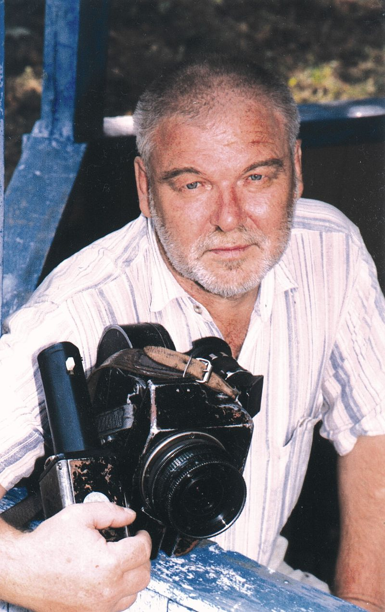

 Белоусов Олег Павлович Belousov Oleg Белавусаў Алег Паўлавіч
(16 ноября 1945, Слуцк — 26 марта 2009, Мінск) — белорусский аниматор, сценарист, кинорежиссер. (November 16th 1945, Slutsk — March 26th 2009, Minsk) — Belorussian animator, screen-writer, director. (16 лістапада 1945, Слуцк — 26 сакавіка 2009, Мінск) — беларускі аніматар, сцэнарыст, кінарэжысёр.
1966
Рабoтал литературным сотрудником газеты "Литература и искусство"
Worked as a literature co-worker at "Literature and Art" journal
Працаваў літаратурным супрацоўнікам газеты «Літаратура і мастацтва»
1975-1989
Основатель и художественный руководитель мастерской мультфильмов киностудии "Беларусьфильм
Founder and Art Director of the cartoon studio at the "Belarusfilm"
Заснавальнік і мастацкі кіраўнік майстэрні мультфільмаў кінастудыі «Беларусьфільм»
1995
Вице-президент киновидеостудии "Кадр-2".
Член Белорусского Союза Журналистов, Белорусского союза кинематографистов и Белорусского союза художников Vice-President of the movie studio "Kadr-2".
Member of the Belorussian Journalists Union, Belorussian Movie Makers Union and Belorussian Artists Union. Віцэ-прэзідэнт кінавідэастудыі «Кадр-2».
Член Беларускага саюза журналістаў, Беларускага саюза кінематаграфістаў і Беларускага саюза мастакоў
Член Белорусского Союза Журналистов, Белорусского союза кинематографистов и Белорусского союза художников Vice-President of the movie studio "Kadr-2".
Member of the Belorussian Journalists Union, Belorussian Movie Makers Union and Belorussian Artists Union. Віцэ-прэзідэнт кінавідэастудыі «Кадр-2».
Член Беларускага саюза журналістаў, Беларускага саюза кінематаграфістаў і Беларускага саюза мастакоў
Список работ: List of Works: Списак работ:
- 1980 Сказка про Веселого Клоуна Merry Clown's Tale Казка пра вясёлага клоуна
- 1982 Песня о Зубре Zubr's Song Песня пра зубра
- 1985 Ковбойские Игры Cowboys' Games Каўбойскія гульні
- 1987 Ладья Печали Sorrow Boat Ладдзя роспачы
- 1988 Куб The Cube Куб
- 1990 Очень старый человек с огромными крыльями Very Old Man with Huge Wings Вельмі стары чалавек з вялізнымі крыламі
- 1993 Декамерон Decameron Дэкамерон
{kind=link}
{kind=link}
{kind=link}
{kind=link}